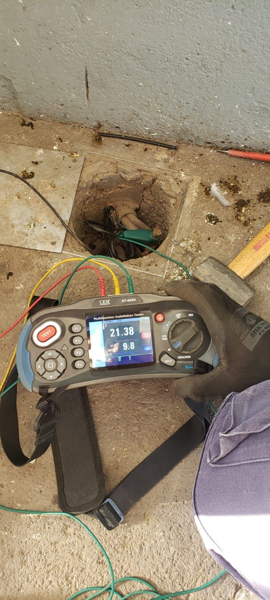
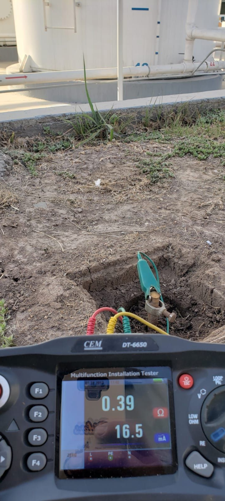
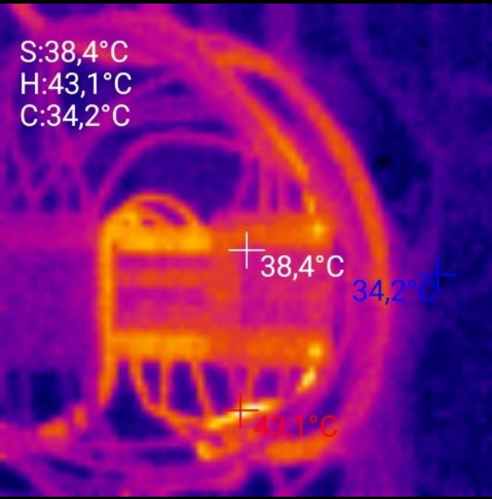

SERVICIOS DISPONIBLES
Medición de Puesta a Tierra
 La forma básica y más sencilla de realizar la medición de la resistencia de tierra utilizando el método técnico es el método de tres polos (3p), donde el circuito de corriente y tensión se conecta al sistema de puesta a tierra con un solo cable de prueba. Es necesario utilizar dos sondas auxiliares.
Valor del producto:
$40.000
Termografías
La termografía permite captar la radiación infrarroja del espectro electromagnético utilizando cámaras térmicas. Con estas cámaras convertimos la energía que irradia un objeto, invisible al ojo humano, en una imagen visible formada a partir de la temperatura superficial de los objetos captados por la cámara.